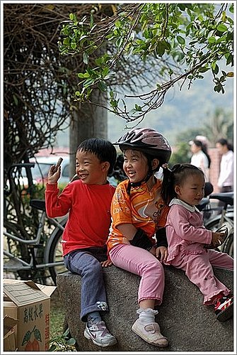
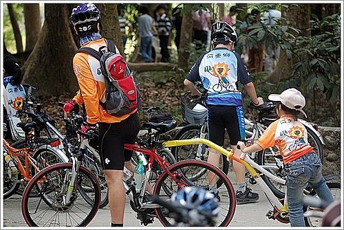
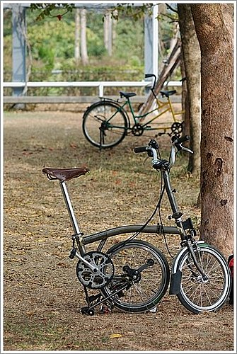
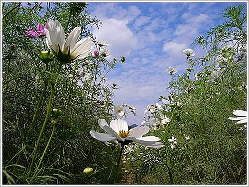
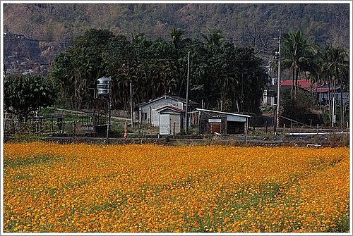
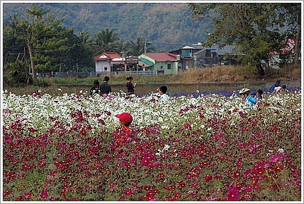

幸福在哪裡？
有一天，小獅子問母獅子說：「媽媽！幸福在哪裡？」 母獅子回答說：「幸福在你的尾巴上！」 於是，小獅子為了尋找他的幸福，不停的追著自己的尾巴跑，卻怎麼追也追不到。
小獅子又跑去問母獅子：「媽媽，你說幸福在我的尾巴，可是為什麼我找不到呢？」 母獅子回答說：「幸福是不必刻意去追尋的，只要你往前走，幸福就會一直跟在你身後」。
──摘自網路《心靈雞湯》
河東獅車隊再次規劃周詳而豐富的知性親子單車遊，這是年度的大集合，最高興的是孩子們，不僅有爸媽帶著騎，還有玩伴一起度過有趣而快樂 的一天。
的一天。

和孩子一起騎車，雖然只須輕鬆踩、向前行，但最難的是培養彼此間的默契──要大孩子慢慢騎、小小孩子努力跟上 …
…


而美濃具有得天獨厚的山水景觀和深厚的文化背景，以單車旅遊，更能深刻體會美濃之美。總而言之，此行最令人回味有二，一是美濃花田 ，一是敬字亭
，一是敬字亭 。
。
花田中，波斯菊飄逸的身影和浪漫的鼠尾草，實在令人驚豔！在林醫師卓越的攝影技巧下，更加令人讚嘆！





敬字亭是幾百年前建的？有幾層？有幾個角？是拜那個〞神〞？幾級古蹟？─經由隊長 的詳細解說和有獎徵答，孩子們滿載而歸
的詳細解說和有獎徵答，孩子們滿載而歸 。
。


幸福是來自可以自由玩樂 ，
，
在不常是平順的路上騎乘 ，
，
除了自己要隨時注意把握 ，
，
還得感謝 老天恩惠與眷顧，
老天恩惠與眷顧，
讓我們平安而快樂！